1064A24 VARIABLE GEOMETRY TURBOCHARGER EXHAUST MANIFOLD ASSEMBLY SLEEVELEADING TO EXHAUST PIPE R R
- Path
- Procedures > 10 ENGINE UNIT > 1064 TURBO CHARGING SYSTEM > 1064A TURBO CHARGER ASSEMBLY > 1064A24 VARIABLE GEOMETRY TURBOCHARGER EXHAUST MANIFOLD ASSEMBLY SLEEVELEADING TO EXHAUST PIPE R R
- Kind
- repair procedure (removal / refitting; the operation number is the code)
- Applies to
- engines: 1.9 JTD 16V; all production periods
- Interactive page
- https://sloeber94.github.io/elrnDB-aGt/en/#/125001065
Applies to: engines: 1.9 JTD 16V; all production periods
 Removing
Removing
 Refitting
RefittingPosition the vehicle on the ramp
Proceed with removal
- 1016A10 sound-proofing cover - r + r
Proceed with removal
Proceed with removal
Op. 7055B54 UNDER-ENGINE GUARD - R R
1. Undo the bolts (1a) and remove the exhaust manifold heat shield (1b).
Op. 1088D24 RIGID PIPE FOR COOLANT INLET TO WATER PUMP - R + R
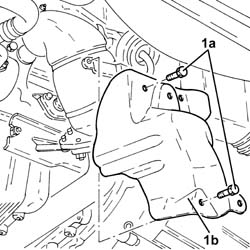
Applies to: engines: 1.9 JTD 16V; all production periods
1. Undo the nuts (1a) and remove the upper exhaust manifold heat shield (1b).
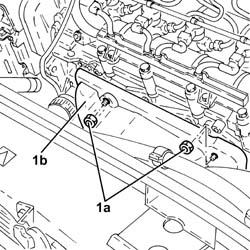
Applies to: engines: 1.9 JTD 16V; all production periods
1. Undo the nuts fixing the front section of the exhaust pipe to the catalytic pre-converter.
2. Undo the nuts fixing the front section of the exhaust pipe to the catalytic converter.
3. Remove the front exhaust pipe section complete with seals.
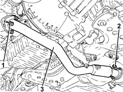
Applies to: engines: 1.9 JTD 16V; all production periods
1. Disconnect the vacuum pipe from the turbocharger variable geometry control actuator.
2. Loosen the band and disconnect the air supply hose between the turbocharger and the heat exchanger, turbocharger side.
3. Loosen the band and disconnect the corrugated air intake sleeve to the turbocharger, turbocharger side.
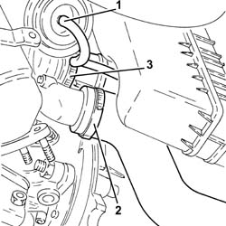
Applies to: engines: 1.9 JTD 16V; all production periods
1. Undo the bolts (1a) and the nuts (1b) fixing the catalytic preconverter mounting bracket.
2. Undo the bolts securing the engine oil return pipe from the turbocharger, engine crankcase side.
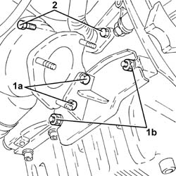
Applies to: engines: 1.9 JTD 16V; all production periods
1. Undo the connector (1a) and disconnect engine oil supply pipe to the turbocharger (1b), crankcase side.
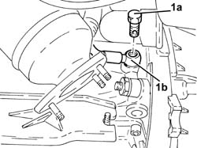
Applies to: engines: 1.9 JTD 16V; all production periods
1. Loosen the collar (1a) and remove the catalytic preconverter (1b).
2. Keep the catalytic preconverter mounting bracket.
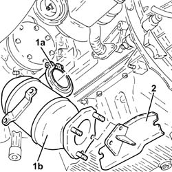
Applies to: engines: 1.9 JTD 16V; all production periods
1. Undo the nuts (1a) and remove the variable geometry turbocharger assembly (1b) complete with exhaust manifold (1c).
2. Remove the exhaust manifold gasket.
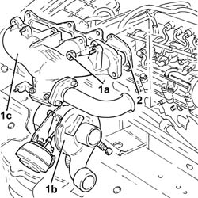
Applies to: engines: 1.9 JTD 16V; all production periods
Refitting
Removing1. Place an exhaust manifold gasket in the housing.
2. Place the variable geometry turbocharger assembly (2a) complete with exhaust manifold (2b) back in its housing and secure it using the nuts (2c).
 | Fastening | Component | Ø | Value (daNm) |
|---|---|---|---|---|
2c | Nut | EXHAUST MANIFOLD/S | M8 | (Cylinder head side) 2.3 ÷ 2.8 |
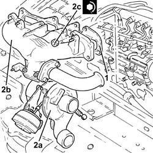
Applies to: engines: 1.9 JTD 16V; all production periods
Place the catalytic preconverter complete with mounting back in its housing and fasten it to the turbocharger using the collar.
1. Connect the engine oil delivery pipe to the turbocharger (1a), crankcase side, and tighten the connector (1b) to the recommended torque.
| Fastening | Component | Ø | Value (daNm) |
|---|---|---|---|---|
1b | Connector | OIL DELIVERY PIPE TO TURBO | M12 | (Engine crankcase side) 1.4 ÷ 1.7 |
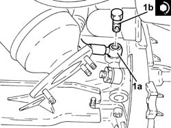
Applies to: engines: 1.9 JTD 16V; all production periods
Tighten the bolt fixing the enigne oil return pipe from the turbocharger, engine crankcase side.
Tighten the bolts and the nuts fixing the catalytic preconverter mounting bracket.
Connect the corrugated air intake sleeve to the turbocharger, turbocharger side, and tighten the band.
Connect the air supply hose between the turbocharger and the heat exchanger, turbocharger side, and secure with a band.
Connect the vacuum pipe from the turbocharger variable geometry control actuator.
1. Place the front section of the exhaust pipe with gaskets back in its housing.
2. Tighten the nuts securing the exhaust pipe front section to the catalytic converter to the specified torque.
| Fastening | Component | Ø | Value (daNm) |
|---|---|---|---|---|
2 | Nut | PRE-CAT CONVERTOR/CAT CONVERTOR PIPE | M8 | (Catalytic converter side) 2.3 ÷ 2.8 |
3. Tighten the nuts fixing the front section of the exhaust pipe to the catalytic preconverter to the recommended torque.
| Fastening | Component | Ø | Value (daNm) |
|---|---|---|---|---|
3 | Nut | PRE-CAT CONVERTOR/CAT CONVERTOR PIPE | M8 | (Catalyitic preconverter side) 2.3 ÷ 2.8 |
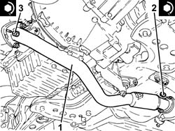
Applies to: engines: 1.9 JTD 16V; all production periods
Place the upper exhaust manifold heat shield back in its housing and fix it using the nuts.
Place the lower exhaust manifold heat shield back in its housing and fix it using the bolts.
Proceed with refitting
Op. 1088D24 RIGID PIPE FOR COOLANT INLET TO WATER PUMP - R + R.
Proceed with refitting
Op. 7055B54 UNDER-ENGINE GUARD - R R.
Refill the engine cooling system with coolant
Op. 0010T20 COOLANT CHECK DENSITY AND TOP UP IF NECESSARY.
Proceed with refitting
- 1016A10 sound-proofing cover - r + r
.
Position the vehicle on the ramp
Topics linked from this page (3)
- 0010T20 COOLANT CHECK DENSITY AND TOP UP IF NECESSARY
- 1088D24 RIGID PIPE FOR COOLANT INLET TO WATER PUMP - R + R
- 7055B54 UNDER-ENGINE GUARD - R R